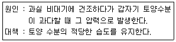

원예기능사 (2008-03-30 기출문제)
1과목: 임의 구분
1. 난방시설로부터의 열 손실은 다음 중 어느 부분의 비율이 가장 높은가?
- 관류열량
- 환기전열량
- 지중전열량
- 모두같다
(정답률: 67%)

2. 시설내에서의 냉방 효과에 관한 설명 중 잘못된것은?
- 시설의 주년적인 이용이 가능하다.
- 약광의 조건으로 생육을 조절할 수 있다.
- 온도가 낮아 해충 발생이 억제된다.
- 패드 방식일 때에는 공기가 깨끗해지고 작업 능률이 높아진다.
(정답률: 67%)
3. 다음 채소류 중 내염성이 가장 약한 것으로만 짝지어진 것은?
- 딸기,상추
- 토마토,오이
- 파,당근
- 시금치,배추
(정답률: 75%)
4. 시설재배기간 동안 연료의 소비량을 예측하는데 중요하게 이용되는 난방부하는?
- 난방부하량
- 최대난방부하
- 기간난방부하
- 난방부하계수
(정답률: 60%)
5. 유리온실의 투과 광량을 증대시키기 위한 방법이다. 관계가 없는것은?
- 시설의 설치방향 조정
- 피복재의 세척
- 산광피복재이용
- 한냉사이용
(정답률: 79%)
6. 최대 난방 부하를 계산할 때 바깥 기온은 그 지방의 어떤 기온을 적용하는가?
- 지난해 최고 기온
- 최근 5년 동안의 최저 기온
- 최근 7년 동안의 최고 기온
- 최근 10년 동안의 최저 기온
(정답률: 80%)
7. 시설 내에 변온관리를 하면 난방비도 절약되고 작물의 열매 수, 무게 등의 질이 높아지게 된다. 변온관리 시간은 어느 때가 적합한가?
- 아침
- 점심
- 저녁
- 야간
(정답률: 62%)
8. 부숙한 퇴비에 질소가 0.5% 탄소가 25%라면 이 퇴비의 탄질비는 얼마인가?
- 0.5
- 1.25
- 50
- 125
(정답률: 72%)
9. 시설 내 채소 재배지 토양의 입단화를 촉진하는 방법으로 옳지 않은 것은?
- 심경
- 석회의 시용
- 빈번한 관수
- 멀칭 및 유기물의 시용
(정답률: 73%)
10. 다음 중 작율별 생육 최저 한계온도가 가장 높은 것은?
- 결구상추
- 무
- 토마토
- 온실멜론
(정답률: 68%)
11. 다음 중 피복자재의 방적성 설명으로 가장 적합한 것은?
- 피복재 내부에 수증기가 응결되어 물방울 맺힘을 방지하는 성질
- 피복자재의 인장강도,인열강도,내충격성 등의 정도
- 피복자재 표면의 정전기 발생 정도
- 피복자재에 자외선 안정제 혼입 정도
(정답률: 75%)
12. 설치가 용이하고 시설비가 싼 편이며 배관이 필요없어 시설비가 저렴한 관계로 일반적으로 가장 많이 이용되고 있는 난방은?
- 온풍난방
- 난로난방
- 전열난방
- 온수난방
(정답률: 80%)
13. 수분 함량이 같은 상태일 경우 토양의 수분 장력이 가장 큰 것은?
- 식양토
- 사양토
- 사토
- 식토
(정답률: 82%)
14. 생장촉진에 중점을 두고 있는 식물공장으로만 짝지워진 것은?
- 완전제어형,태양광병용형
- 완전제어형,태양광이용형
- 태양광병용형,태양광이용형
- 무전원형,태양광병용형
(정답률: 69%)
15. 우주환경을 감안하여 개발하고 있는 수경재배 시스템 중에서 양분,산소,수분을 공급하기 위하여 재배조에 양액을 담아 기포를 발생시켜 재배하는 방식은?
- 분무경
- 담액수경
- 고형배지경
- 분무수경
(정답률: 69%)
16. 다음 설명된 참외의 생리적 장해는?

- 열과
- 배꼽과
- 호리병과
- 여드름과
(정답률: 73%)
17. 토마토 재배시 칼슘이 부족하기 때문에 발생하는 병은?
- 덩굴마름병
- 탄저병
- 노균병
- 배꼽썩음병
(정답률: 83%)
18. 시설 채소 재배가 일부 품목에 집중될 경우 발생할 가능성이 적은 것은?
- 과잉생산
- 가격폭락
- 농민의 피해
- 소비자 피해
(정답률: 88%)
19. 시설원예 생산의 불안정한 원인을 설명한 것 중 바른 것은?
- 환경제어 기술이 뒤떨어져 재배환경이 불량하다
- 시설 자체는 완벽하나 운용 기술이 미흡하다.
- 시설재배 전용품종의 보급이 지나치게 활발하다
- 자동화 하우스와 온실의 설치 면적이 많아진다.
(정답률: 62%)
20. 토양이 강한 산성반응일 때 그 결핍이 뚜렷하고 작물이 생육 장해를 입게 되는 양분 요소는?
- 철
- 구리
- 망간
- 마그네슘
(정답률: 70%)
2과목: 임의 구분
21. 다음 중 수박 꽃의 형태는?
- 자웅이화
- 자웅동화
- 자웅이주
- 양성화
(정답률: 64%)
22. 종자가 발아하는데 빛이 있으면 발아가 촉진되는 채소는?
- 토마토
- 상추
- 오이
- 파
(정답률: 73%)
23. 농약을 두 가지 이상 혼용 사용했을때 기대 효과로 틀린것은?
- 방제노력이 절감 된다.
- 살충.살균 효과를 동시에 얻는다
- 2가지 약제의 상승적 효과를 기대할 수 있다
- 약해 방지에 도움이 된다
(정답률: 80%)
24. 연동식 하우스가 단동식 하우스에 비해 유리한 점은?
- 광선의 입사량이 많다
- 환기가 용이한다
- 토지의 이용률이 높다
- 하우스를 짓고 헐기가 쉽다
(정답률: 74%)
25. 촉성 재배용 오이(무접목의 경우)의 적정 육묘 일수는?
- 15~20일
- 20~25일
- 25~30일
- 30~35일
(정답률: 57%)
26. 다음 중 해충의 기계적 방제법에 속하는 것은?
- 차단법
- 품종 선택
- 돌려짓기
- 약제살포
(정답률: 82%)
27. 다음 중 추숙의 효과는 어느 것인가?
- 재배기간을 연잘 할 수 있다
- 과실을 더욱 크게 할 수 있다
- 저장기간을 연장할 수 있다.
- 호흡작용을 억제할 수 있다
(정답률: 70%)
28. 오이의 성분화에서 가장 예민하게 환경의 영향을 받는 생육 단계는?
- 육묘기의 자엽 전개기
- 육묘기의 본엽 4~5장
- 육묘기의 본엽 12~13장
- 육묘기의 본엽 20~22장
(정답률: 72%)
29. 하우스 재배에서 광량이 저하되는 이유에 해당하지 않는 것은?
- 기둥.서까래 등의 골격재에 의한 차광
- 피복재에 의한 광선의 반사 또는 흡수
- 피복재의 오염 또는 물방울 맺힘
- 새로운 피복자재의 이용
(정답률: 79%)
30. 다음 해충 중 식물체의 즙액을 빨아먹는 피해 외에 바이러스 병을 매개하는 종류로만 짝지어진 것은?
- 응애.담배나방
- 진딧물.총채벌레
- 톡톡이.점박이응애
- 고자리파리.벼룩잎벌레
(정답률: 80%)
31. 포도 시설 재배의 적지로 부적당한 곳은?
- 눈.돌풍 및 늦서리 등의 피해가 적은 지역
- 보온.관수 등의 관리가 쉬운 평탄지
- 남향의 일조량이 풍부하여 바람이 적은 곳
- 지하 수위가 높고 부식이 적은 점질토
(정답률: 89%)
32. 다음 중 사용량이 많으면 꽃눈 분화를 저해하는 비료성분으로 가장 적절한 것은?
- 질소
- 인산
- 칼륨
- 칼슘
(정답률: 75%)
33. 과수에서 수분이 부족하면 어느 부위에서 가장 먼저 수분결핍 현상이 일어나는가?
- 과실
- 잎
- 가지
- 뿌리
(정답률: 68%)
34. 다음 중 결과모지의 설명으로 적합한 것은?
- 산초가 자라는 가지
- 결과지가 발생하는 가지
- 개화에 이용되는 가지
- 원가지에서 발생한 가지
(정답률: 72%)
35. 8-8보르드액을 만들 때 물 50L에 필요한 황산구리의 양은?
- 200g
- 400g
- 600g
- 8000g
(정답률: 75%)
36. 다음 중 한국 배의 품종명은?
- 야리
- 바틀릿
- 청실리
- 장십랑
(정답률: 65%)
37. 과수의 농약 살포시 약해가 나타나기 쉬운 조건은?
- 저온
- 고온
- 건조
- 약한 광선
(정답률: 69%)
38. 사과나무 수형만들기 요령에 대하여 부적합한 설명은?
- 주간(원가지)에서 발생된 주기는 간격이 있어야 한다.
- 주지의 발생각도가 알맞아야 한다.
- 주간.주지.곁가지는 반드시 주종이 분명해야 한다
- 하단 부주지(아래에 있는 덧원가지)와 상단 부주지(위에 있는 덧원가지)는 크기가 비슷해야 한다.
(정답률: 72%)
39. 다음 중 조풍해를 설명한 것으로 가장 적합한 것은?
- 깊은 산속에서 부는 바람의 피해를 말한다
- 바다 바람에 의한 염분의 피해를 말한다
- 강바람에 의한 피해를 말한다
- 하쳔변의 습기 찬 바람의 피해를 말한다
(정답률: 89%)
40. 포도나무에서 마그네슘 결핍의 증상으로 옳은 것은?
- 아랫잎부터 잎맥 사이가 황갈색으로 변함
- 포도 껍질이 딱딱해지고 과육이 경화됨
- 결과지의 껍질이 갈라짐
- 과실이 작아지며 과육이 부패함
(정답률: 80%)
3과목: 임의 구분
41. 포도 델라웨어 품종을 무핵과실을 생산하기 위해 지베렐린을 처리코자 할 때 제 1차 처리시기로 가장 적합한 때는?
- 만개 예정일 7일전
- 만개 예정일 13일전
- 만개시
- 만개 10일 후
(정답률: 68%)
42. 사과나무에 피해를 주는 응애의 종류가 아닌 것은?
- 한풀응애
- 사과응애
- 클로버응애
- 점박이응애
(정답률: 62%)
43. 다음 중 장과류에 속하는 과수는?
- 복숭아
- 사과
- 감귤
- 포도
(정답률: 80%)
44. 성목원에 가장 효과적인 시비방법은?
- 윤구시비
- 전원시비
- 조구시비
- 방사구시비
(정답률: 59%)
45. 포도나무 수형 중 주로 장초전정을 하는 대표적 수형은?
- 웨이크만형
- 일자형
- 개량니핀형
- X자형
(정답률: 61%)
46. 화강암으로부터 이루어진 토양에 대한 설명으로 가장 적합한 것은?
- 유기물이 많아 비옥하다
- 토양의 물리적 성질이 좋지 않다
- 보수력은 좋으나 통기성이 나쁘다
- 배수성 및 공기의 유통성은 좋으나 양분의 함량이 적은 편이다
(정답률: 87%)
47. 대형온실이나 하우스에서 관엽식물, 양란재배에 이용되는 관수방법으로 가장 적당한 것은?
- 고랑관수
- 살수형관수
- 분수형관수
- 지중관수
(정답률: 60%)
48. 다음 중 야자과에 속하는 식물은?
- 소철
- 아레카
- 코르딜리네
- 유카
(정답률: 75%)
49. 다음 중 가을 뿌림 한해살이 화초는?
- 샐비어
- 프리뮬러
- 백일홍
- 메리골드
(정답률: 54%)
50. 군자란에 발생하는 병해로 고온다습과 일광부족으로 발생하기 쉬우며 어린 잎이 수침상으로 부패하는 병은?
- 백견병
- 무름병
- 탄저병
- 흰가루병
(정답률: 62%)
51. 자연환기를 위해 온실에 설치된 시설은?
- 유리피복
- 천창.측창
- 환풍기
- 커튼
(정답률: 92%)
52. 다음 중 비래 해충에 해당하는 것은?
- 하늘소
- 멸강나방
- 배추나방
- 진딧물
(정답률: 75%)
53. 스쿠핑.노칭 등의 방법으로 인공 분구하여 번식시키는 구근은?
- 글라디올러스
- 칸나
- 백합
- 히아신스
(정답률: 71%)
54. 다음 중 건조화로 사용하기 가장 알맞은 화훼류는?
- 봉선화
- 팬지
- 백일홍
- 밀짚꽃
(정답률: 68%)
55. 씨가 싹터서 정식까지 주로 발생하며 줄기의 지표면 가까이 부분이 부패 됨에 따라 쉽게 쓰러지고 시들어 죽는 병은?
- 흰가루병
- 모잘록병(입고병)
- 갈색무늬병
- 바이러스병
(정답률: 87%)
56. 다음 중 식물체에 가장 빨리 잘 흡수되는 질소의 형태는?
- 단백질태
- 요소태
- 시안아미드태
- 암모늄태
(정답률: 65%)
57. 카네이션 개화기에 언청이의 발생원인과 관계 없는 것은?
- 꽃받침의 생장보다 꽃잎의 생작이 급격하게 이루어 질때
- 주.야간 온도교차가 작을 때
- 꽃눈 발달 시기가 지나친 저온일 때
- 꽃눈 발달시 수분과 거름이 과다할 때
(정답률: 85%)
58. 장미 흰가루병 방제에 알맞은 농약은?
- 스트렙토마이신.티오파네이트메틸수화제(아다킹)
- 페나리몰수화제(동부훼나리)
- 패러쾃디클로라이드액제(그라목손)
- 아피엔유제(삼공이피엔)
(정답률: 70%)
59. 다음 중 우리나라에서만 자생하는 한국 특산식물로 열매의 모양이 둥근 부채를 닮은 식물은?
- 구절초
- 문주란
- 미선나무
- 모감주나무
(정답률: 66%)
60. 국화(추동국)를 7월 중순에 꺾꽂이 하여 12월 하순에 개화시켜 출하하려고 할 때 재배기간 중 어떤 처리 과정이 필요한가?
- 고온처리
- 단일처리
- 저온처리
- 전조처리
(정답률: 67%)
난방시설에서 발생한 열은 건물 내부를 통해 외부로 방출되는데, 이때 가장 많은 열이 손실되는 부분은 건물 내부를 통해 유입되는 외부 공기와의 열교환인 관류열량입니다. 따라서 관류열량이 가장 높은 비율을 차지합니다.
환기전열량은 건물 내부 공기를 외부로 배출하면서 발생하는 열 손실을 의미하며, 지중전열량은 지하실이나 지하도로부터 전달되는 열을 의미합니다. 이 두 가지 열 손실 역시 중요하지만, 전체적으로는 관류열량이 가장 큰 비중을 차지합니다.